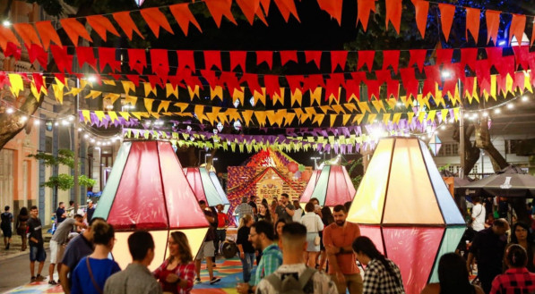
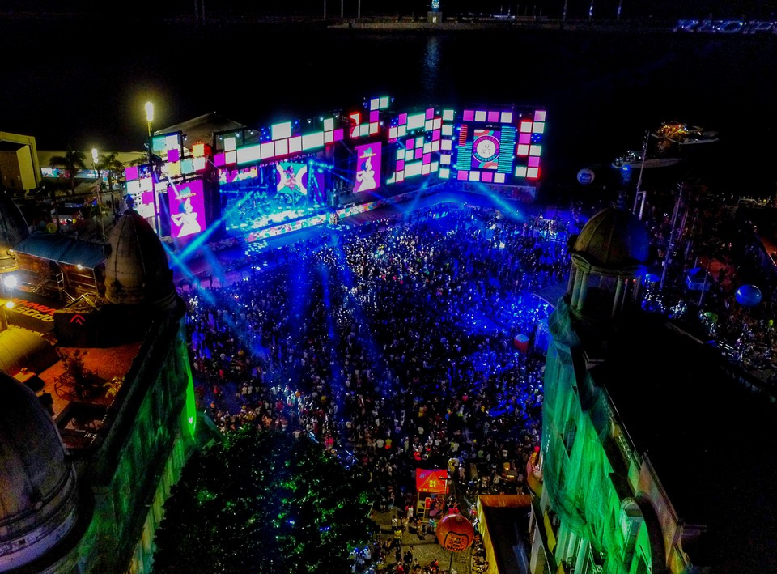

Boa parte dos eventos e festividades acontecem nos arredores do Marco Zero, surgindo como uma excelente oportunidade para conhecer e participar de festas tradicionais da região. É por lá que ocorrem algumas das festas mais importantes do calendário local.
Como o Carnaval, onde ocorrem apresentações de maracatu, frevo, ciranda e outras expressões artísticas típicas de Pernambuco.

O monumento também é um ponto de destaque durante as festividades de São João, quando a praça é decorada de maneira temática e ganha barracas de comidas típicas, fogueiras e apresentações de quadrilhas juninas.
Além de apresentações e shows de grandes artistas durante o ano.
 Voltar